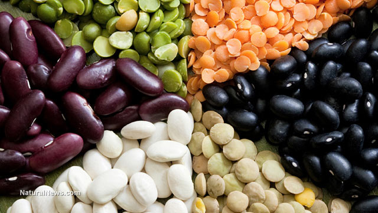

More Website Templates @ TemplateMonster.com - July 30, 2014!
Top 10 protein-packed plants for survival and a healthy diet

The following list contains 10 protein-packed plants for a healthy diet.
This list may also come in handy in a survival situation where a person's body may require various protein sources.
After all, the USDA recommends that adults over the age of 19 should be consuming at least 0.37 grams of protein for every pound of body weight on a daily basis. That's 83.25 grams daily for a 225-pound male. If meat isn't available to fulfill these needs, then it may be time to dig some protein out of the garden or scoop some out of the pond.
This list of plant-based proteins could be important if all animal sources of protein have been exhausted in the midst of a food crisis. In a post-collapse scenario,
all wild game will be shot to pieces as desperate populations of people struggle to keep meat on the table.
Knowing the right plant sources of protein could make all the difference in a life or death scenario or in a bartering situation.
Saving seeds from this list of plants is crucial regardless of the scenario, because these plants possess a higher nutritious profile than most meat sources do today.
First, a cup of cooked beans provides 40-45 grams of protein and is a one of the better pre-storable options.
Even more protein-dense are soybeans, which contain up to 65 grams of protein per cup.
Seaweed in general is just as protein-packed as soybeans and is a much healthier option. One cup provides 64.37 grams of protein.
Chlorella and spirulina, two very nutrient-dense superfoods, contain the most easy-to-digest protein out of all plant sources. An average cup contains 61 grams of protein along with many key nutrients like vitamin A. Chlorella and spirulina can be stored in advance, but proper care should be taken in selecting them from a clean source.
The sixth source is nuts. The average cup of nuts contains 20 grams of protein. It is less important to store nuts in advance, since these, especially peanuts, can harbor fungal growth.
A cup of quinoa provides 8 grams of protein. Quinoa is a great food to store in advance for food insurance for the possibility of running into difficult times.
Lima beans clock in at 14.66 grams of protein per cup, while peas come in at 8.58 grams per cup.
Even potatoes contain protein. A medium-sized potato bears 4.33 grams.
A cup of cooked spinach provides around 5.35 grams of protein, while a cup of cooked broccoli comes in at about 5.7 grams.
Even an ear of corn contains at least 4 grams.
Pumpkin seeds are packed. Just one ounce contains 9.35 grams of protein. An ounce of hemp seeds provides at least 6 grams of protein per ounce, and chia seed isn't too far behind, providing 4 grams per ounce.
Swiss chard, fennel, cauliflower, and Brussels sprouts are four more garden plants that provide protein, just in smaller amounts -- fewer than 4 grams per cup from each.